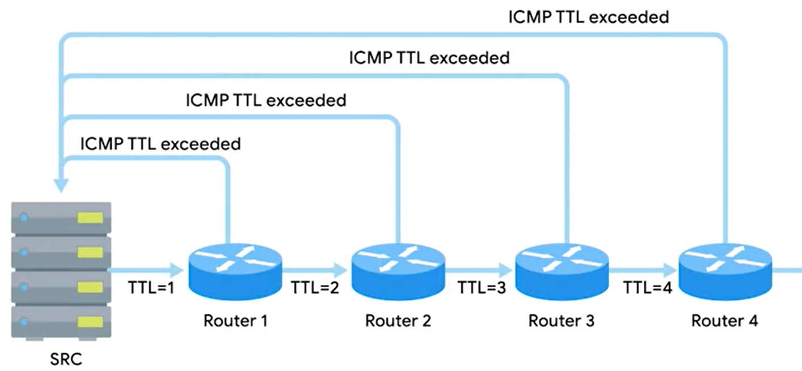

NETWORK LAYER CONNECTIVITY TOOLS
traceroute is a utility that lets you discover the paths between two nodes, and gives you information about each hop along the way.
it works by increasing the TTL field by 1 each time to receieve an ICMP TTL exceeded msg

in linux - "traceroute"
in win - "tracert"
"Different versions of traceroute send different packets out.
The Linux version sends UDP packets by default;
the windows version on your PC sends pings."
If you initiative from a Cisco router or unix based system, its implementation uses UDP;
The device ends out a sequence of User Datagram Protocol (UDP) datagrams to an invalid port address at the remote host (very high port numbers).
If you were to use traceroute equivalent in windows (tracert), it will use ICMP.
There are distributions in unix that let you specify if you would like to use ICMP instead of the default UDP.
Examples of both:
ICMP


2 more tools for long running traceroutes-
linux - "mtr"
windows - "pathping" - will run for 15 sec and display data all at once